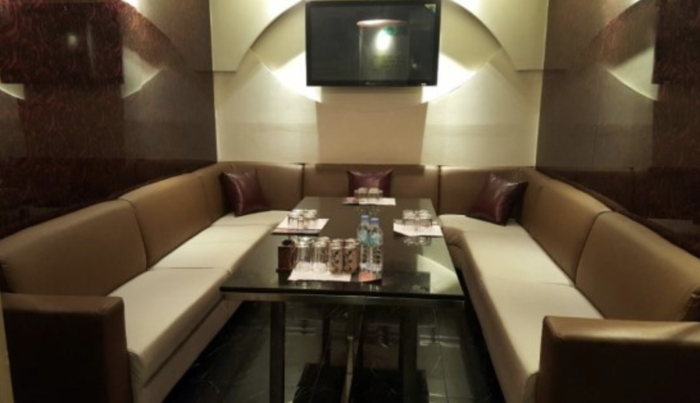
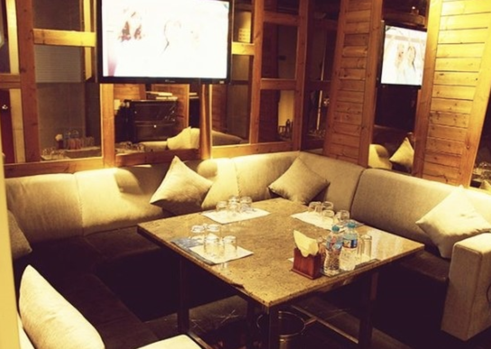
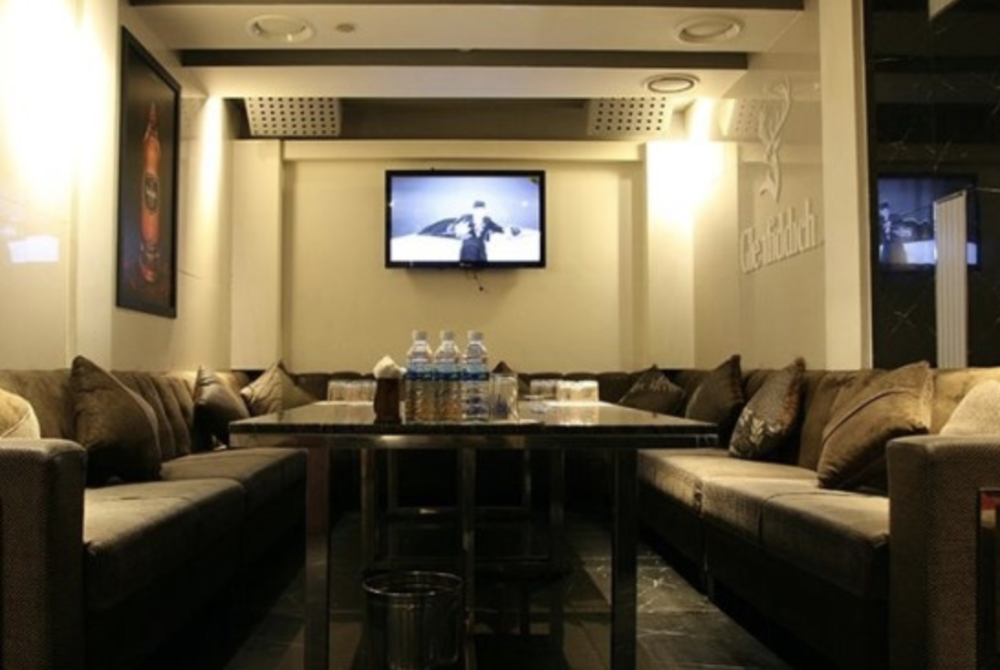

✓ 초콜릿 셔츠룸 010👉4994👉3368 예양무늬~!
✓ 초콜릿 셔츠룸 010👉4994👉3368 예양무늬~!
정보
상호: 초콜릿대표번호: 010-4994-3368영업시간: 저녁7시 ~ 다음날 오후3시주차유무: 주차가능 / 발렛파킹 : 10,000원
안녕하세요 선정릉에 위치한 초콜릿 셔츠룸 입니다. 편안한 자리가 되실 수 있도록 옆에서 폭풍케어 내상제로 약속드립니다. 편하게 문의주시면 친절하게 답변해드리겠습니다. 감사합니다!
* 초콜릿 셔츠룸 주소
서울특별시 강남구 삼성동 선릉로100길 56
맨 위로 이동
* 초콜릿 셔츠룸 이미지
  
맨 위로 이동
* 초콜릿셔츠룸 스토리
초콜릿 셔츠룸은 얼마나 많은 톱밥을 톱질해보셨습니까? 그러자 한 명도 손을 들지 않았다. 당연히 톱밥을 톱질할 수 없죠! 셰드가 소리쳤다. 이미 톱질된 것이니까요 과거도 마찬가지 입니다. 이미 지나간 일, 이미 한 일을 걱정하기 시작한다면 단지 톱밥을 톱질하려는 것과 똑같습니다. 야구의 거장 코니 맥이 81세가 되었을 때, 나는 그에게 질경기에 대해 걱정해본 적이 있는지 물었다. 물론이죠, 하지만 오래전에 그런 어리석은 짓을 그만두었습니다. 그래봐야 전혀 도움이 안 된다는 걸 깨달았기 때문이죠. 이미흘러가버린 냇물로 물레방아를 돌릴 수는 없지 않겠어요? 그렇다. 이미 흘러가버린 냇물로는 물레방아를 돌릴 수 없고, 어떤 곡물도 갈 수 없다. 하지만 얼굴에 있는 주름을 더 만들거나, 배에 궤양을 만들어 자극할 수는 있다. 지난 추수감사절에 나는 잭 뎀프시와 저녁을 함께 먹었따. 그는 칠면조 요리에 크랜베리 소스를 발라 먹으면서 자신이 헤비급 챔피언십 경기에서 터니에게 패한 싸움에 대해 언급했다. 그때의 초콜릿 셔츠룸의 패배는 자존심에 큰 충격을 주었다고 그는 말했다. 경기 중간쯤 갑자기 제가 너무 늙어버렸다는 생각이 들었습니다. 10라운드 후반부에 저는 여전히 두 발로 설 수 있었지만 그게 제가 할 수 있는 전부였습니다. 제 얼굴은 맞아서 부어올랐고, 찢어졌으며, 눈은 거의 감겨 있었습니다. 시합후 심판이 터니의 손을 들어 승리했음을 발표하는 걸 봤습니다. 더 이상 전 세계 첨피언이 아니었습니다. 저는 링에서 내려와 관중 사이를 뚫고 탈의실로 돌아갔습니다. 제가 지나갈 떄 어떤 사람들은 제 손을 자븡려 했고, 어떤사람들은 눈물을 머금었습니다. 1년 뒤에 저느 ㄴ터니와 다시 경기했지만 소용 없었습니다. 저는 완전히 패배했습니다. 이 모든 것을 걱정하지 않기란 어려웠지만 저는 제 자신에게 말했습니다. 나는 더 이상 과거 속에 살거나 엎질러진 우유를 두고 울지 않겠어. 이런 일은 한 방 쳐서 날려버리면 돼. 이런 일로는 절대 쓰러지지 않을 거야. 그리고 뎀프시는 정확히 그렇게 했다. 어떻게 했을까? 계속해서 자기 스스로에게 나는 과거에 대해 걱정하지 않을 것이다라고 다짐했을까 안다. 그렇게 하면 과거에 대해 계속 생각하고 걱정하게 될 뿐이다 뎀프시는 과거를 받아들였고, 패배를 인정했으며, 앞으로 할 일에 더 집중했다. 그는 브로드웨이에서는 잭 뎀프시 레스토랑을, 57번가에서는 그레이트 노던 호텔을 운영했다. 그리고 권투 시합을 개최하고 복싱 전시회를 열었다. 뎀프시는 자신이 맡은 초콜릿 셔츠룸에서의 일을 해내느라 너무 바빠서 과거에 대해 걱정할 시간도 없었고, 걱정에 빠져들지도 않았다. 저는 챔피언이었을 때보다 지난 10년간 더 좋은 시간을 보냈습니다. 뎀프시가 말했다.
맨 위로 이동
* 강남베이스먼트 접속방법
- bsmt.kr
- 네이버에 강남베이스먼트 검색.
강남 모든업종별 영업진모음.
같은 카테고리의 다른 글
Home| ✓ 초콜릿 셔츠룸 010👉4994👉3368 대박사건 | 2019. 04. 11 |
|---|---|
| ✓ 초콜릿 셔츠룸 010👉4994👉3368 달콤짭짤 단짠단짠~ | 2019. 04. 11 |
| ✓ 초콜릿 셔츠룸 010👉4994👉3368 달달하네여 | 2019. 04. 11 |
| ✓ 초콜릿 셔츠룸 010👉4994👉3368 헤헤 | 2019. 04. 07 |
| ✓ 초콜릿 셔츠룸 010👉4994👉3368 예양무늬~! | 2019. 04. 07 |
| ✓ 초콜릿 셔츠룸 010👉4994👉3368 최신정보를 여기서 | 2019. 04. 07 |